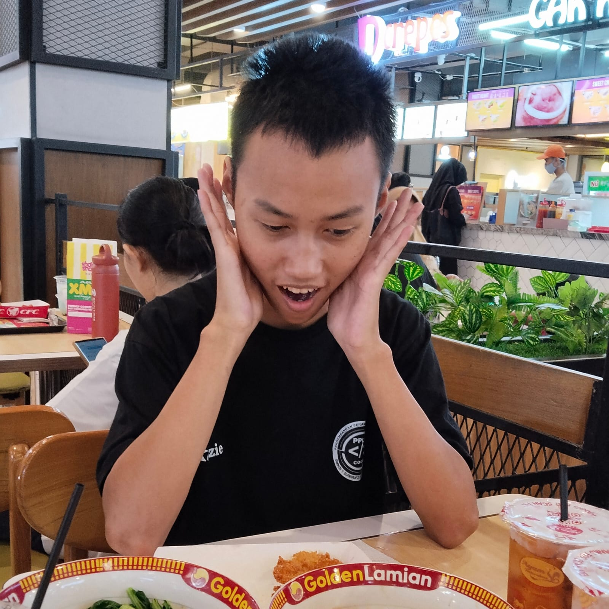
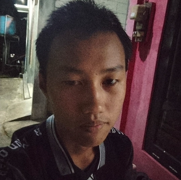

About Me


Hello all! Kenalin nih, saya Abyan Kenzie Kayana, biasa dipanggil Kenzie. Saya berasal dari kelurahan Wangon, RT 01/RW 03, Kecamatan Banjarnegara, Kabupaten Banjarnegara. Saya sekarang sedang bersekolah di SMKN 1 Bawang, mengambil jurusan Pengembangan Perangkat Lunak dan Gim (PPLG), dan masih di kelas 10.
Saya adalah anak yang disiplin, selalu patuh dan hormat kepada orang tua dan guru, serta tentunya ramah kepada siapapun. Saya berharap agar kedepannya saya bisa menjadi pribadi yang lebih baik dan mengejar cita-cita saya yaitu menjadi programmer yang ahli khususnya di bagian backend. Senang bisa berkenalan dengan kalian!